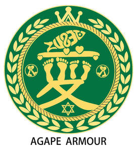

Trade Mark Journal No.2025/013 28 March 2025
UK00004173106 13 March 2025 (14,18,25)

No claim is made to the exclusive right to use “ AGAPE” or “ ARMOUR ” apart from the mark as shown.
International priority date claimed: 1 December 2024
(China)
(70934012)
- Class 14
- Jewellry; Brooches [jewellery]; Jewellery brooches; Ornaments [jewellery]; Pendants [jewellery]; Necklaces [jewellery, jewelry (Am.)]; Pearls [jewellery]; Rings being jewellery; Rings [jewellery]; Costume jewellery; Charms [jewellery]; Jewellery charms; Jewelry; Hat jewellery; Jade [jewellery]; Jewellery items; Ivory [jewellery, jewelry (Am.)]; Bracelets [jewellery]; Gold jewellery; Jewellery stones; Jewellery boxes; Plastic costume jewellery; Fashion jewellery; Jewellery caskets; Pins [jewellery]; Jewellery chain; Pearls [jewelry]; Chains [jewellery]; Pendants [jewelry]; Charms [jewelry]; Jewelry charms; Paste jewellery; Ivory jewellery; Rings [jewelry]; Agate as jewellery; Costume jewelry; Clasps for jewelry; Jewellery products; Facial jewellery; Diamond jewelry; Bracelets [jewelry]; Lockets [jewelry]; Hat jewelry; Jewellery findings; Body jewellery; Jewellery rolls; Jewelry boxes; Silver; Spun silver [silver wire]; Silver watches; Unwrought silver alloys; Silver thread; Gold plated bracelets; Silver and its alloys; Jewellery made from silver; Gold plated rings; Gold plated brooches [jewellery]; Gold rings; Gold plated chains; Silver, unwrought or beaten; Silver objets d'art; Silver thread [jewellery, jewelry (Am.)]; Gold and its alloys; Gold base alloys; Gold chains; Jewellery made from gold; Platinum alloy ingots; Trophies coated with precious metal alloys; Trinkets of bronze; Jewellery made of crystal coated with precious metals; Square gold chain; Jewellery made of plated precious metals; Cuff links made of silver plate; Trinkets coated with precious metal; Rings coated with precious metals; Statuettes of precious metal; Gold; Silver necklaces; Silver bracelets; Silver rings; Gold necklaces; Gold bracelets; Finger rings; Engagement rings; Wedding rings; Earrings; Hoop earrings; Gold earrings; Drop earrings; Necklaces [jewelry]; Necklaces; Leather jewelry boxes.
- Class 18
- Garment bags; Garment bags for travel; Backpacks; Duffel bags; Duffel bags for travel; Baby backpacks; School backpacks; Carry-on bags; Backpacks for carrying babies; Tote bags; Carrying bags; Small backpacks; Hiking rucksacks; Handbag straps; Sling bags; Luggage bags; Waterproof bags; Baby carrying bags; All-purpose carrying bags; Daypacks; Straps for suitcases; Carry-on suitcases; Shoe bags for travel; Belt bags and hip bags; Bags for school; School bags; Straps for luggage; Luggage straps; Traveling bags; Bags for clothes; Schoolbags; Bags for travel; Bags; Gym bags; Umbrella bags; Shoe bags; Shoulder bags; Travelling bags; Bucket bags; Trolley duffels; Bags (Garment -) for travel; Trunks and traveling bags; Leather bags; Wheeled bags; Leather suitcases; Suit bags; Boot bags; Cabin bags; Suitcase handles; Handles (Suitcase -); Two-wheeled shopping bags; Bags for campers; Hunting bags; Suitcases; Luggage; Imitation leather; Leather and imitation leather; Imitations of leather; Leather; Imitation fur; Key cases of imitation leather; Leather handbags; Leather cloth; Leather purses; Leather twist; Wheeled suitcases; Suitcases with wheels; Roller suitcases; Small suitcases; Travel luggage; Overnight suitcases; Trunks [luggage]; Luggage trunks; Trunks being luggage; Luggage covers; Luggage labels; Airline travel bags; Luggage tags; Traveling sets [leatherware]; Canvas bags; Duffle bags; Carry-all bags; Crossbody bags; Cross-body bags; Drawstring bags; Grocery tote bags; Camping bags; Cloth bags; Hiking bags; Diaper bags; Umbrella rings; Umbrellas; Sun umbrellas; Golf umbrellas; Parasols; Luggage label holders; Handbags; Clutch handbags; Handbags, purses and wallets; Fashion handbags; Purses [leatherware]; Straps for handbags; Clutch purses; Purses; Ladies handbags; Pocketbooks [handbags]; Wrist mounted carryall bags; Travelling bags [leatherware]; Slouch handbags.
- Class 25
- Shirts; T-shirts; Jeans; Pants; Blue jeans; V-neck sweaters; Sweatpants; Polo sweaters; Baby pants; Vest tops; Golf shorts; Clothes; Dress suits; Suits; Bathing suits; Skirt suits; Sweat suits; Leather suits; Body suits; Men's suits; Rain suits; Dress pants; Jackets [clothing]; Clothing for leisure wear; Dresses; Dress shoes; Ties [clothing]; Overcoats; Jackets; Shorts [clothing]; Leggings [trousers]; Underwear; Undergarments; Underpants; Panties; Lingerie; Bed socks; Bras; Socks; Toe socks; Yoga socks; Leather garments; Silk clothing; Woven clothing; Linen clothing; Clothing; Leather clothing; Clothing of leather; Down garments; Shoes; High-heeled shoes; Sneakers [footwear]; Tennis shoes; Walking shoes; Sports shoes; Golf shoes; Women's shoes; Boots; Bridesmaid dresses; Wedding dresses; Evening dresses; Sundresses; Evening gowns; Hoods; Hoods [clothing]; Visors [clothing]; Hats; Beanie hats; Fur hats; Rain hats; Sun hats; Beanies; Bikinis; Swimwear; Swimsuits.
LAN JIANGANG